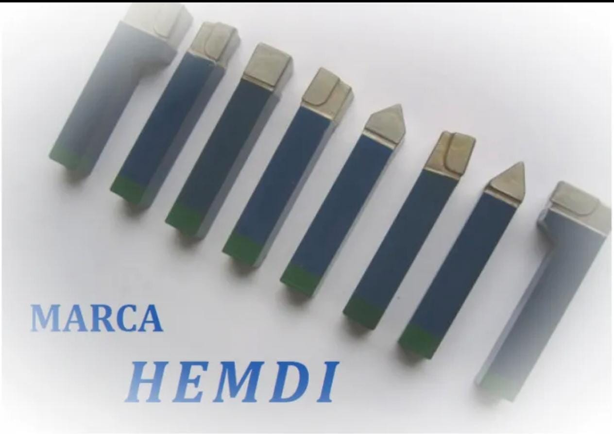

Buriles calzados de alta resistencia
Buriles calzados estándar y especiales, optimizados para las demandas mecánicas del mecanizado moderno. Grados K‑42 y K‑68.
- Cuadrados / cilíndricos
- Punta 60° / 80°
- Corte derecho e izquierdo
- Diseños bajo plano